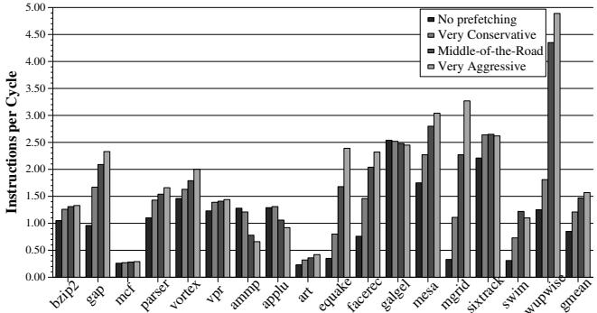
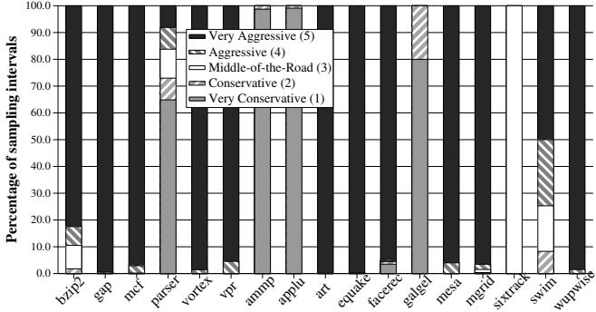
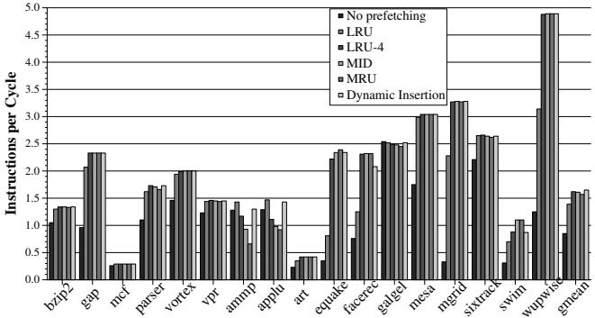

Feedback Directed Prefetching: Improving the Performance and Bandwidth-Efficiency of Hardware Prefetchers 论文解析¶
0. 论文基本信息¶
作者 (Authors) - Santhosh Srinath†‡ - Onur Mutlu§ - Hyesoon Kim‡ - Yale N. Patt‡
发表期刊/会议 (Journal/Conference) - 该论文未在提供的文本中明确指出其发表的期刊或会议名称。
发表年份 (Publication Year) - 该论文未在提供的文本中明确指出其发表年份。
1. 摘要¶
目的 - 解决传统硬件数据预取器（hardware data prefetcher）存在的两大核心问题：性能不稳定（在某些程序上因过度激进的预取导致性能严重下降）和内存带宽效率低下（产生大量无用预取，浪费带宽并引发缓存污染）。 - 提出一种通用的、基于动态反馈的机制，以提升预取器的性能和带宽效率。
方法
- 提出 Feedback Directed Prefetching (FDP) 机制，通过实时监控三个关键指标来动态调整预取行为：
- Prefetch Accuracy (预取准确率)：衡量预取的数据块中有多少被后续的实际需求（demand access）所使用。
- Prefetch Lateness (预取延迟)：衡量有用的预取请求中有多少未能及时返回，导致需求访问时仍需等待。
- Prefetcher-Generated Cache Pollution (预取器引发的缓存污染)：衡量因预取数据而被驱逐、且后续又被需求访问的缓存块数量。
- 设计了低成本的硬件结构来收集上述反馈信息：
- 使用 pref-bit 标记预取块，并通过计数器 pref-total 和 used-total 计算准确率。
- 利用 MSHR (Miss Status Holding Register) 中的 pref-bit 和计数器 late-total 来检测延迟的预取。
- 采用 Bloom filter 结构（一个4096-entry的位向量）来近似估算缓存污染，避免了为每个被驱逐块维护状态的高昂开销

Figure 3. IPC performance (left) and prefetch lateness (right) with different aggressiveness configurations Figure 4. Filter to estimate prefetcher-generated cache pollution
。 - 基于采样间隔（以L2缓存驱逐次数为单位）收集的指标，动态调整两个方面： 1. 预取器的激进度 (Aggressiveness)：通过一个3-bit的饱和计数器，在“非常保守”到“非常激进”五个配置间切换。调整策略综合考虑了准确率、延迟和污染三个指标

。 2. 预取块的缓存插入位置 (Cache Insertion Policy)：根据估算的污染程度，动态决定将预取块插入LRU栈的 MRU（最近使用）、MID（中间）、LRU-4 或 LRU（最久未使用）位置。
结果
- 在17个内存密集型SPEC CPU2000基准测试上，与表现最佳的传统流式预取器（Very Aggressive）相比：
- FDP（同时调整激进度和插入策略）实现了 6.5% 的平均性能（IPC）提升。
- 内存带宽消耗（BPKI）减少了 18.7%。
- 与消耗相似带宽的传统预取器（Middle-of-the-Road）相比，FDP提供了 13.6% 的更高性能。
- 完全消除了传统激进预取器在 ammp 和 applu 等基准测试上的巨大性能损失

Figure 9. Overall performance of FDP
。 - FDP机制具有良好的通用性，在 Global-History-Buffer (GHB) 和 PC-based stride prefetcher 上同样有效。 - 硬件开销极低，仅为 2.54 KB，不到1MB L2缓存数据存储大小的0.25%。
| 配置 | 平均 IPC | 平均 BPKI |
|---|---|---|
| No Prefetching | 1.00x | 1.00x |
| Very Conservative | 1.08x | 1.06x |
| Middle-of-the-Road | 1.12x | 1.13x |
| Very Aggressive (Best Conventional) | 1.18x | 1.30x |
| FDP (Proposed) | 1.26x (+6.5%) | 1.06x (-18.7%) |
结论 - 将动态反馈机制引入硬件预取器设计是提升其性能和带宽效率的有效途径。 - 综合考量准确率、延迟和缓存污染这三个维度，比仅依赖单一指标（如准确率）能带来更显著的收益（+3.4%性能，-2.5%带宽）。 - 所提出的低成本硬件方案（特别是基于Bloom filter的污染估算和动态LRU插入策略）具有很高的实用价值和可扩展性，适用于多种现代预取器架构。
2. 背景知识与核心贡献¶
研究背景与动机
- 现代高性能处理器普遍采用硬件数据预取 (hardware data prefetching) 技术来隐藏巨大的主存延迟 (main memory latency)，通过预测程序的内存访问模式并提前将数据加载到缓存中。
- 尽管预取能显著提升许多程序的性能，但它也存在两大严重弊端：
- 带宽浪费与争用: 不准确的预取请求会消耗宝贵的内存带宽 (memory bandwidth)，并与关键的需求请求 (demand requests) 产生争用，反而增加延迟。
- 缓存污染 (cache pollution): 预取的数据可能驱逐掉未来会被程序真正使用的缓存块，不仅降低性能，还会因需要重新加载被驱逐的数据而进一步浪费带宽。
- 传统的预取器（如流式预取器 (stream-based prefetcher)）通常采用静态的、固定激进度 (fixed aggressiveness) 配置。如图1所示，这种“一刀切”的策略在某些基准测试（如
ammp,applu）上会导致严重的性能下降，迫使现代处理器不得不采用相对保守的策略，从而牺牲了在其他程序上的潜在性能收益。

Figure 1. Performance vs. aggressiveness of the prefetcher
- 预取器本身是一个正反馈系统：错误的预取导致缓存缺失，新的缺失又可能触发更多无用的预取，形成恶性循环。因此，亟需引入一个负反馈机制来动态调节其行为，使其稳定高效。
核心贡献
- 提出了一种名为反馈导向预取 (Feedback Directed Prefetching, FDP) 的通用动态调节框架，该框架通过实时监控三个关键指标来调整预取器的行为：
- 预取准确率 (Prefetch Accuracy): 衡量预取地址的预测准确性。
- 预取及时性/延迟 (Prefetch Lateness): 衡量预取数据是否在需求到来前已就绪。
- 预取器引发的缓存污染 (Prefetcher-Generated Cache Pollution): 衡量预取操作导致的有用数据被驱逐的程度。
- 设计了一种低成本、基于布隆过滤器 (Bloom filter) 的硬件机制，用于在运行时高效地估算缓存污染，解决了精确追踪污染开销过大的难题。
Figure 3. IPC performance (left) and prefetch lateness (right) with different aggressiveness configurations Figure 4. Filter to estimate prefetcher-generated cache pollution
- FDP 从两个维度动态调整预取行为：
- 动态调节预取激进度: 根据上述三个指标的反馈，使用一个饱和计数器 (saturating counter) 在多个预设配置（从非常保守到非常激进）之间切换。
- 动态调节缓存插入策略: 根据估算的缓存污染程度，决定将预取块插入到 LRU 栈的不同位置（如 MRU, MID, LRU-4, LRU），以平衡保留有用预取和减少污染之间的矛盾。
- 实验结果表明，FDP 在 SPEC CPU2000 的 17 个内存密集型基准测试上，相比性能最佳的传统流式预取器配置，实现了 6.5% 的平均性能提升，并减少了 18.7% 的内存带宽消耗。更重要的是，它完全消除了传统激进预取在
ammp和applu等程序上的巨大性能损失。 - FDP 具有良好的通用性，同样适用于 GHB-based delta correlation prefetcher 和 PC-based stride prefetcher，证明了其作为一种通用优化框架的价值。其硬件开销仅为 2.54 KB，且不增加关键路径延迟。
3. 核心技术和实现细节¶
0. 技术架构概览¶
整体技术架构
本文提出的 Feedback Directed Prefetching (FDP) 是一种动态反馈机制，旨在通过实时监控硬件预取器（Hardware Prefetcher）的运行效果，来动态调整其行为，从而在提升性能的同时降低内存带宽消耗。其核心架构围绕三个关键指标的收集、分析与反馈执行展开。
- 反馈信息收集层 (Feedback Collection Layer)
- 该层负责在硬件层面实时估算三个核心指标：
- Prefetch Accuracy (预取准确率): 通过在 L2 缓存的每个 tag 条目中增加一个 pref-bit 标记位，并配合两个计数器 preftotal (总预取数) 和 used-total (有用预取数) 来计算。当预取块被需求访问时，该位被重置并增加 used-total。
- Prefetch Lateness (预取延迟度): 利用 Miss Status Holding Register (MSHR) 结构。MSHR 中的每个条目也包含一个 pref-bit。当一个需求请求命中了一个 pref-bit 被置位的 MSHR 条目时，说明该预取是延迟的，此时递增 late-total 计数器。
- Prefetcher-Generated Cache Pollution (预取器引发的缓存污染): 采用基于 Bloom filter 概念的硬件结构（称为 pollution filter）来低成本地近似估算。该 filter 是一个位向量，用于追踪因预取而被驱逐的需求块。当发生需求缺失时，查询此 filter 可判断该缺失是否由预取引起，并更新 pollution-total 计数器。
-
所有指标的收集都采用基于采样的区间更新策略，以适应程序的阶段性行为变化。一个采样区间的长度由 L2 缓存的驱逐块数量（eviction-count）决定，而非固定时间周期。
-
决策与调整层 (Decision & Adaptation Layer)
- 在每个采样区间结束时，系统会根据收集到的三个指标的加权平均值，与预设的静态阈值进行比较，从而做出调整决策。
- FDP 通过两种互补的方式来调整预取器行为：
- 动态调整预取器激进程度 (Dynamic Aggressiveness):
- 使用一个 3-bit 饱和计数器 (Dynamic Configuration Counter) 来表示当前的预取配置，范围从 Very Conservative 到 Very Aggressive。
- 根据 Accuracy, Lateness, 和 Pollution 三个指标的组合情况（共12种场景），查表（Table 2）决定是增加、减少还是保持计数器的值，从而动态改变 Prefetch Distance 和 Prefetch Degree。
- **动态调整预取块缓存插入策略 (Dynamic Insertion Policy)**:
- 不再将所有预取块无差别地插入 LRU 栈的 **MRU (Most-Recently-Used)** 位置。
- 而是根据估算的 **Cache Pollution** 程度，动态选择插入位置：**MID** (中间位置), **LRU-4** (四分之一位置), 或 **LRU** (最不常用位置)。污染越高，插入位置越靠近 LRU 端，以减少对有用数据的干扰。
- 适用性与评估
- FDP 被设计为一个通用框架，论文验证了其在 Stream-based prefetcher, Global-History-Buffer (GHB) based delta correlation prefetcher, 和 PC-based stride prefetcher 三种主流硬件预取器上的有效性。
- 实验结果表明，FDP 在 SPEC CPU2000 套件的 17 个内存密集型基准测试中，相比最佳的传统预取器配置，实现了 6.5% 的平均性能提升和 18.7% 的内存带宽节省。
- 其硬件开销极低，仅为 2.54 KB 的额外存储，且不增加关键路径延迟。
1. 动态反馈驱动的预取器激进度调整¶
动态反馈驱动的预取器激进度调整机制
该机制的核心在于通过一个闭环控制系统，利用运行时收集的反馈信息来动态调节硬件预取器的行为，从而在最大化性能收益的同时，最小化其带来的负面影响。
-
输入：三大核心反馈指标
- Prefetch Accuracy (预取准确率): 衡量预取请求中有多少是真正被程序使用的。计算公式为
有用预取数 / 总预取数。低准确率意味着大量带宽被浪费在无用数据上。 - Prefetch Lateness (预取及时性): 衡量有用的预取请求中有多少是“迟到”的，即在程序真正需要数据时，数据尚未从内存返回。计算公式为
迟到的有用预取数 / 有用预取数。高延迟会削弱甚至抵消预取带来的性能增益。 - Prefetcher-Generated Cache Pollution (预取器引发的缓存污染): 衡量由预取操作直接导致的额外需求缺失（Demand Misses）的比例。高污染意味着预取的数据挤占了未来会被使用的有效数据，反而增加了总缺失率和带宽消耗。
- Prefetch Accuracy (预取准确率): 衡量预取请求中有多少是真正被程序使用的。计算公式为
-
反馈信息的硬件实现
- 准确率追踪: 在L2缓存的每个tag条目中增加一个 pref-bit。当预取块被插入缓存时，该位被置位；当该块被需求访问（useful）时，该位被清除，并累加 used-total 计数器。同时，每次发送预取请求都会累加 pref-total 计数器。
- 及时性追踪: 利用 MSHR (Miss Status Holding Register) 结构。MSHR中的每个条目也包含一个 pref-bit。当一个需求请求命中了一个pref-bit被置位的MSHR条目时，说明该预取请求还未完成，即为“迟到”，此时累加 late-total 计数器。
- 缓存污染追踪: 采用基于 Bloom filter 概念的低成本硬件结构（称为污染过滤器）。该过滤器是一个位向量。
- 当一个因需求缺失而加载的块被预取请求驱逐出缓存时，在过滤器中对应地址的位置1。
- 当一个预取请求完成并插入缓存时，在过滤器中对应地址的位置0。
- 当发生一个新的需求缺失时，查询过滤器。如果对应位为1，则认为此次缺失是由预取器造成的，并累加 pollution-total 计数器。
-
采样与更新策略
- 为了避免对瞬时噪声过度反应，系统采用基于采样的区间更新策略。
- 一个采样区间的长度由L2缓存的驱逐事件数量定义（实验中阈值 Tinterval=8192）。
- 在每个区间结束时，使用指数移动平均（如
CounterValue = α * CounterValueDuringInterval + (1-α) * CounterValue）来平滑历史数据，并据此计算最新的三个指标值。 - 这些更新后的指标值将用于决定下一个区间的预取器行为。
-
输出：动态调整预取器激进度
- 预取器的激进度由两个关键参数控制：Prefetch Distance（预取距离，决定预取多远）和 Prefetch Degree（预取度，决定一次预取多少块）。
- 系统维护一个3位的Dynamic Configuration Counter (动态配置计数器)，其值（1-5）对应五种预设的激进度配置，从 Very Conservative 到 Very Aggressive。
- 在每个采样区间结束时，根据三个指标与预设阈值（Ahigh, Alow, Tlateness, Tpollution）的比较结果，查表（Table 2）决定如何更新该计数器。
- 例如，如果检测到高污染，通常会降低激进度以减少带宽浪费和缓存干扰。
- 如果检测到低准确率但高延迟，可能会降低激进度，因为盲目提前预取只会带来更多无用流量。
- 如果检测到低污染、低延迟但高准确率，则维持当前激进度，因为此时预取效果最佳。
- 在整体系统中的作用
- 该机制充当了一个自适应的负反馈控制器，解决了传统固定激进度预取器的根本缺陷：无法适应不同程序或同一程序不同执行阶段的内存访问特性。
- 它成功地将预取器从一个可能带来巨大性能损失的“双刃剑”，转变为一个稳定、高效且带宽友好的性能提升工具。
- 实验结果表明，该机制能完全消除传统激进预取器在某些基准测试（如 ammp, applu）上造成的严重性能下降，同时在其他受益于预取的程序上保持甚至超越其性能，并显著降低内存带宽消耗（平均减少18.7%）。
2. 基于布隆过滤器的预取缓存污染估算¶
实现原理与核心思想
- 该机制的核心挑战在于，精确追踪所有因预取而被驱逐的 demand-fetched L2 cache blocks 在硬件上是不切实际的，因为这需要为每个被驱逐块维护历史记录，开销巨大。
- 论文提出了一种基于 Bloom filter 概念的低成本近似方案。其核心思想是：用一个共享的 bit-vector（即布隆过滤器）来“标记”那些可能因预取而被驱逐的块的地址。
- 这是一种有损但高效的估算方法，它牺牲了精确性（存在假阳性），换取了极低的硬件存储成本（论文中仅使用 4096-entry bit vector）。
算法流程与状态机
- 初始化: 污染过滤器（Pollution Filter）是一个全零的位向量。
- 事件1: 需求块被预取驱逐 (Demand Block Evicted by Prefetch):
- 当一个因 demand miss 而加载进L2缓存的块，被一个 prefetch request 驱逐出缓存时，系统会获取该被驱逐块的地址。
- 使用该地址（通过
lower_bits XOR higher_bits的哈希函数）索引到过滤器的特定位，并将该位置为1。这表示“此地址对应的块可能已被预取污染”。
- 事件2: 预取块被加载 (Prefetch Block Inserted):
- 当一个 prefetch request 从内存返回并被插入L2缓存时，系统会获取该预取块的地址。
- 同样通过哈希函数索引到过滤器，并将对应位重置为0。这是一个关键的“清理”步骤，用于防止过滤器饱和和假阳性率过高。其逻辑是：如果一个预取块成功进入缓存，那么它就不再是“被驱逐的需求块”，应该清除之前的潜在标记。
- 事件3: 需求未命中发生 (Demand Miss Occurs):
- 当一个 demand access 在L2缓存中未命中时，系统会检查污染过滤器。
- 使用该需求未命中地址通过相同的哈希函数索引过滤器。
- 如果对应位为1，则认为这次 demand miss 很可能是由预取器造成的（即 prefetcher-caused demand miss），并将 pollution-total 计数器加一。
- 如果对应位为0，则认为这次未命中与预取无关。
Figure 3. IPC performance (left) and prefetch lateness (right) with different aggressiveness configurations Figure 4. Filter to estimate prefetcher-generated cache pollution
输入、输出与在整体中的作用
- 输入:
- L2缓存的驱逐事件（特别是由预取请求触发的驱逐）。
- L2缓存的插入事件（特别是预取块的插入）。
- L2缓存的需求未命中事件。
- 输出:
- 一个硬件计数器 pollution-total，用于统计估算出的 prefetcher-caused demand misses 数量。
- 结合另一个计数器 demand-total（总需求未命中数），可以计算出 Prefetcher-Generated Cache Pollution 指标：
pollution-total / demand-total。
- 在整体中的作用:
- 这个估算出的 cache pollution 指标是 Feedback Directed Prefetching (FDP) 机制的关键反馈信号之一。
- 它直接驱动两个核心决策：
- 动态调整预取器激进程度 (Dynamic Aggressiveness): 如表2所示，当检测到高污染时，系统会倾向于降低预取器的激进程度（减少Prefetch Distance和Degree），以减轻对缓存的干扰。
- 动态调整预取块插入策略 (Dynamic Insertion Policy): 如3.3.2节所述，根据污染程度的高低，系统会决定将新预取的块插入到LRU栈的不同位置（MRU, MID, LRU-4, 或 LRU），高污染时插入更靠近LRU的位置，使其更快被驱逐，从而减少对有用数据的挤占。
参数设置与设计考量
- 过滤器大小: 论文中使用了 4096-entry 的位向量。这是一个在硬件开销和估算精度之间的权衡。更大的过滤器可以降低假阳性率，但会增加面积；更小的则相反。
- 哈希函数: 采用了简单的
lower_bits XOR higher_bits方式，这是一种轻量级的哈希方法，易于硬件实现，能有效分散地址空间，避免局部冲突。 - “插入时清零”策略: 这是该设计的一个精妙之处。它不仅防止了过滤器被长期占用而失效，还隐含地模拟了缓存的时间局部性——一个很久以前被驱逐的块，其标记被后续插入的预取块覆盖是合理的。
3. 基于污染感知的动态缓存插入策略¶
核心机制与实现原理
- 该策略的核心思想是，预取块的缓存价值与其造成的污染成反比。当预取器准确性高、污染低时，应让预取块在缓存中存活更久（插入靠近MRU的位置）；反之，当污染严重时，应让其快速被淘汰（插入靠近LRU的位置）。
- 具体实现依赖于一个动态决策模块，该模块在每个采样间隔 (sampling interval) 结束时，根据估算出的 Prefetcher-Generated Cache Pollution 指标来决定下一个间隔内所有预取块的插入位置。
- 插入位置并非随意选择，而是定义了三个离散的、与缓存set-associativity (n) 相关的固定位置：
- MID (Middle) 位置: 定义为 LRU 栈中第
floor(n/2)个最不常使用的位置。这是一个折中策略，既非最热也非最冷。 - LRU-4 位置: 定义为 LRU 栈中第
floor(n/4)个最不常使用的位置。比 MID 更靠近淘汰端，生存时间更短。 - LRU (Least Recently Used) 位置: 直接插入到即将被淘汰的位置，生存时间最短。
- MID (Middle) 位置: 定义为 LRU 栈中第
算法流程与输入输出
- 输入: 算法的主要输入是 Prefetcher-Generated Cache Pollution 的估算值。该值通过一个基于 Bloom filter 概念的硬件结构（文中称为 pollution filter）在运行时动态追踪和计算得出。
- 该 filter 通过跟踪因预取而被驱逐的需求块 (demand-fetched blocks) 来间接估算污染。
- 在每个采样间隔结束时，会计算出一个污染比率：
pollution-total / demand-total。
- 决策逻辑: 将计算出的污染比率与两个静态阈值 Plow 和 Phigh 进行比较，进行三分类：
- 低污染 (Low): 污染比率 < Plow → 下一间隔插入 MID 位置。
- 中等污染 (Medium): Plow ≤ 污染比率 < Phigh → 下一间隔插入 LRU-4 位置。
- 高污染 (High): 污染比率 ≥ Phigh → 下一间隔插入 LRU 位置。
- 输出: 决策结果是一个插入位置指针，该指针被缓存控制器用于指导所有预取请求的缓存填充操作。
- 在整体中的作用: 此策略与 动态调整预取器激进程度 (Dynamic Aggressiveness) 机制相辅相成。后者控制“预取多少”，前者控制“预取的数据在缓存里待多久”。两者共同构成了 Feedback Directed Prefetching (FDP) 的完整闭环反馈系统，旨在最大化性能收益的同时最小化带宽开销和缓存污染。
参数设置与实验效果
- 文中使用的具体阈值（来自 Section 4.3）为：Plow = 0.1, Phigh = 0.2。
- 实验结果表明，静态插入策略各有缺陷：
- 始终插入 MRU 会导致高污染场景下性能严重下降。
- 始终插入 LRU 虽能避免污染，但会使有用的预取数据过早被淘汰，损失性能。
- 动态策略成功地为不同基准测试选择了最优或接近最优的静态策略。例如，在
applu和ammp等高污染基准上，动态策略大部分时间选择 LRU 插入；而在wupwise等低污染基准上，则更多地使用 MID 或更靠前的位置。

Figure 8. Distribution of the insertion position of prefetched blocks
- 性能对比数据显示，Dynamic Insertion 策略相比最佳静态策略（LRU-4）还能再提升 1.9% 的性能，充分证明了其有效性。
关键数据对比
下表总结了不同缓存插入策略在 Very Aggressive 预取器配置下的平均性能表现（以 IPC 为指标，MRU 策略为基准 1.0）：
| 插入策略 | 相对 IPC (vs. MRU) | 特点 |
|---|---|---|
| MRU | 1.000 | 基准，高收益高风险 |
| MID | ~1.015 | 折中策略 |
| LRU-4 | 1.032 | 最佳静态策略 |
| LRU | ~0.950 | 避免污染，但牺牲收益 |
| Dynamic Insertion | 1.051 | 最优，自适应平衡 |
4. 基于采样的运行时反馈收集机制¶
核心机制：基于采样的运行时反馈收集
该机制的核心思想是将程序执行划分为动态的、非固定时间长度的采样区间 (sampling interval)，并在每个区间结束时对预取器的性能进行评估，从而为下一区间的决策提供依据。
-
采样区间的定义与触发:
- 区间的边界并非由固定的指令数或时钟周期决定，而是由L2缓存的实际活动来驱动。
- 具体而言，系统维护一个名为
eviction-count的硬件计数器，用于追踪从L2缓存中驱逐出的块的总数。 - 当
eviction-count的值超过一个预设的静态阈值Tinterval时，当前采样区间即告结束。 - 在实验中，
Tinterval被设置为 8192，这恰好是基准配置中1MB L2缓存总块数（16384）的一半。这种设计确保了采样频率与缓存的实际压力相关联。
-
反馈指标的计算与更新:
- 在每个采样区间内，系统会持续累加三个关键指标的原始计数：
pref-total: 发送到内存的预取请求数。used-total: 被需求访问命中的有用预取数。late-total: 因预取请求仍在处理中而导致的需求访问延迟数。pollution-total: 通过Bloom Filter估算的、由预取器导致的需求缺失数。
- 当一个采样区间结束时，这些计数器的值会被用来计算三个核心反馈指标：
- Prefetch Accuracy (预取准确率) =
used-total/pref-total - Prefetch Lateness (预取延迟率) =
late-total/used-total - Prefetcher-Generated Cache Pollution (预取器生成的缓存污染) =
pollution-total/demand-total
- Prefetch Accuracy (预取准确率) =
- 计算完成后，所有原始计数器（
pref-total,used-total等）会被重置为零，为下一个区间做准备。
- 在每个采样区间内，系统会持续累加三个关键指标的原始计数：
-
历史行为的平滑处理:
- 为了防止因单个异常区间而导致预取策略剧烈波动，系统并未完全丢弃历史信息。
- 相反，它采用了一种指数加权移动平均的更新策略。在论文的公式(1)中，每个指标的全局状态值（
CounterValueGlobal）会根据当前区间的测量值（CounterValueDuringInterval）进行更新：CounterValueGlobal = (7/8) * CounterValueGlobal + (1/8) * CounterValueDuringInterval - 这种方式赋予了最近区间的行为更高的权重，同时保留了对历史行为的记忆，使得反馈信号更加平滑和稳健。

输入输出关系及在整体架构中的作用
-
输入:
- 原始事件流: 来自L2缓存和MSHR（Miss Status Holding Register）的底层硬件事件，包括预取请求的发送、需求访问对预取块的命中、需求访问与预取请求在MSHR中的冲突、以及通过Bloom Filter检测到的潜在污染事件。
- L2驱逐事件: 作为触发采样区间结束的信号。
-
输出:
- 三个量化指标: 经过平滑处理后的 Prefetch Accuracy, Prefetch Lateness, 和 Prefetcher-Generated Cache Pollution 的数值。这些是高层决策逻辑的直接输入。
-
在整体架构中的作用:
- 该机制是Feedback Directed Prefetching (FDP) 架构的感知层 (Perception Layer)。它负责将底层复杂的、瞬时的硬件交互，抽象并聚合为三个简洁、可操作的性能指标。
- 它充当了动态调整策略（如改变预取激进程度和缓存插入位置）与实际硬件行为之间的桥梁。没有这个实时、低成本的反馈回路，上层的自适应策略就失去了决策依据。
- 通过将采样与L2驱逐这一与缓存污染和带宽压力高度相关的事件绑定，该机制能够敏锐地捕捉到程序行为的变化（例如，从具有良好空间局部性的循环进入一个随机访问阶段），并及时做出反应。
4. 实验方法与实验结果¶
实验设置
- 模拟器与处理器模型：使用一个内部的、基于执行驱动的 Alpha ISA 模拟器，该模拟器建模了一个高性能的乱序超标量处理器。具体的基线处理器配置参数见下表。
- 内存模型：采用了一个详细的内存模型，忠实地模拟了内存系统中所有硬件结构（如总线、队列）的行为和带宽/端口限制。内存总线带宽为 4.5 GB/s。
- 基线预取器：建模了一个 stream prefetcher，能够跟踪 64 个不同的数据流。预取请求被放入一个 128 项的预取请求队列，并以最低优先级处理，以避免阻塞需求请求。
- 缓存配置：L2 缓存大小为 1MB，采用 16-way 组相联。在基线配置中，预取的数据块被插入到 LRU 栈的 MRU (Most-Recently-Used) 位置。
- 基准测试集：主要评估对象是 SPEC CPU2000 套件中的 17 个内存密集型基准测试程序。选择标准是，在最激进的预取器配置下，这些程序在 2.5 亿条指令的运行过程中至少会发出 200K 条预取请求。此外，还对剩余的 9 个程序进行了评估。
- 运行配置：所有基准测试均使用 Compaq C/Fortran 编译器，开启
-fast优化和 profile-driven feedback。模拟前会跳过初始化阶段，然后运行 250 million instructions。

Table 3. Baseline processor configuration
结果数据
- 整体性能提升：与性能最佳的传统 stream prefetcher 配置（即 Very Aggressive）相比，Feedback Directed Prefetching (FDP) 将 17 个内存密集型基准测试的平均性能提升了 6.5%。
- 消除负面性能影响：FDP 完全消除了传统激进预取器在某些基准测试（如
ammp,applu）上造成的巨大性能损失。例如，在applu上，FDP 相比无预取实现了 13.4% 的性能提升，而传统激进预取器则导致 28.9% 的性能下降。 - 带宽效率：FDP 比 Very Aggressive 配置消耗 18.7% 更少的内存带宽（以 BPKI, Bus accesses Per Kilo Instructions 衡量）。与消耗相似带宽的传统配置相比，FDP 提供了 13.6% 更高的性能。
- 通用性：FDP 的优势不仅限于 stream prefetcher。应用到 GHB-based delta correlation prefetcher 上时，在相似带宽下性能提升 9.9%；应用到 PC-based stride prefetcher 上时，平均性能提升 4%，带宽减少 24%。
- 对其他基准的影响：在剩余的 9 个 SPEC 基准测试上，FDP 也表现稳健，平均性能提升 0.4%，且没有任何程序出现性能下降。
Figure 9. Overall performance of FDP

Table 5. Average IPC and BPKI for FDP vs conventional prefetchers
消融实验
论文通过一系列消融实验，验证了 FDP 中各个组件的有效性和必要性。
- 动态调整预取激进度 (Dynamic Aggressiveness) vs. 静态配置：
- 仅使用动态调整激进度（固定 MRU 插入策略），其平均性能就超过了所有静态配置（No, Very Conservative, Middle-of-the-Road, Very Aggressive）。
- 与 Very Aggressive 配置相比，性能提升 4.7%，并几乎完全消除了
ammp和applu上的性能损失。

Figure 5. Dynamic adjustment of prefetcher aggressiveness
- 机制能自适应地为不同程序选择最优的激进度级别，例如在
wupwise上几乎总是选择 Very Aggressive，而在ammp上几乎总是选择 Very Conservative。

Figure 6. Distribution of the dynamic aggressiveness level
- 动态调整缓存插入策略 (Dynamic Insertion) vs. 静态策略：
- 在固定 Very Aggressive 配置下，动态插入策略的性能优于任何静态策略（MRU, MID, LRU-4, LRU）。
- 与最佳静态策略 LRU-4 相比，性能提升 1.9%；与基线 MRU 相比，性能提升 5.1%。

Figure 7. Dynamic adjustment of prefetch insertion policy
- 该机制能根据污染情况动态选择插入位置，例如在
ammp上主要使用 LRU 位置以减少污染。
Figure 8. Distribution of the insertion position of prefetched blocks
- 仅使用预取准确率 (Accuracy-only) vs. 完整反馈机制：
- 一个仅基于 Prefetch Accuracy 来调整激进度的简化版 FDP，其性能和带宽效率均低于完整的 FDP。
-
完整的 FDP（同时考虑 Accuracy, Timeliness/Lateness, Pollution）比仅用准确率的版本性能高 3.4%，带宽消耗低 2.5%。这证明了综合多维度反馈信息的重要性。
-
FDP vs. 预取缓存 (Prefetch Cache)：
- 为了对比解决缓存污染的另一种方案，作者将 FDP 与使用专用 prefetch cache 的方案进行了比较。
- FDP（直接预取到 L2）的性能比使用 32KB prefetch cache 的激进预取器高 5.3%，并且带宽消耗更低。
- FDP 在性能上接近 64KB prefetch cache 的方案，但硬件开销远小于后者。

Figure 11. Performance of prefetch cache vs. FDP

Figure 12. Bandwidth consumption of prefetch cache vs. FDP